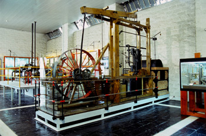

| LA MÁQUINA DE VAPOR | |
|
 Máquina de vapor de Watt. Museo de la Minería y de la Industria. El Entrego , Asturias |
La máquina de vapor supone el mayor logro tecnológico del siglo XVIII y es la piedra angular del desarrollo de la revolución industrial en Gran Bretaña.
|
|
Se trataba de un simple cilindro en el que se introducía vapor de agua que impulsaba el pistón hacia arriba. Después el cilindro era rociado con agua fría y la presión atmosférica impulsaba el pistón hacia abajo. El hecho de tener que enfriar y calentar el cilindro para cada movimiento hacía que la máquina de Newcomen fuese muy ineficiente y solo tuviese éxito para achicar agua en las minas de carbón donde el combustible era casi gratis. A partir de 1763 James Watt, introducirá importantísimas mejoras como añadir un condensador separado del cilindro que evitaba las enormes pérdidas de energía de la máquina de Newcomen. En los años siguientes Watt introducirá numerosas innovaciones en sus patentes destacando entre éstas la adición de un cigüeñal y una rueda para conseguir un movimiento rotatorio que posibilitará su aplicación en las fábricas, el ferrocarril y la navegación en los últimos años del siglo XVIII y los primeros del XIX. A mediados del siglo XIX la potencia de trabajo instalada en forma de máquinas de vapor era ya, en Gran Bretaña, superior a la fuerza humana de todos los obreros británicos. Se había entrado de lleno en la era de la mecanización. |
|